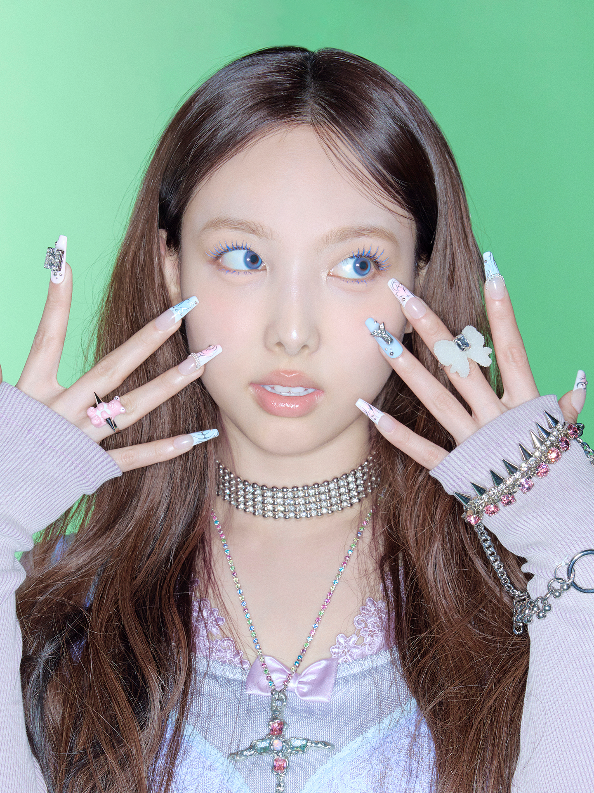
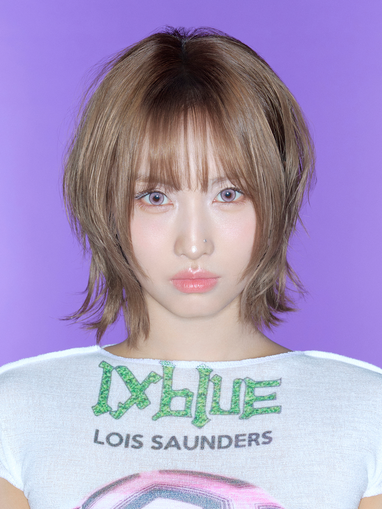
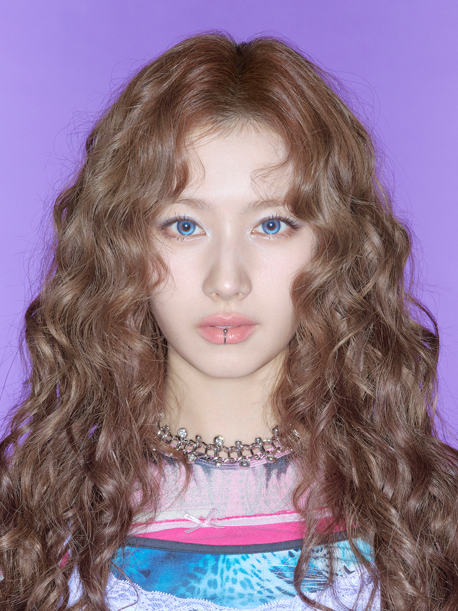
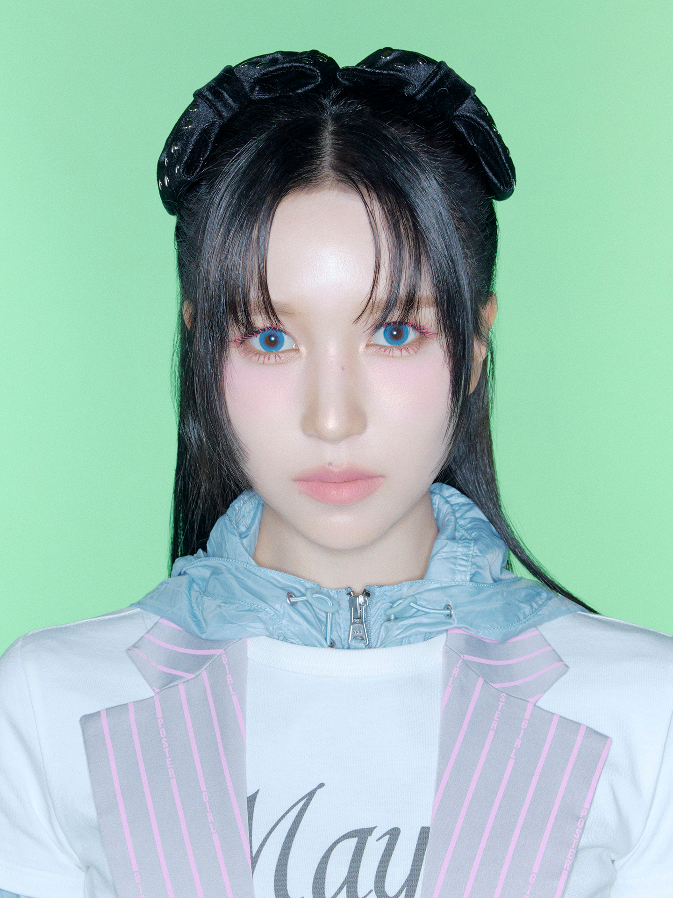
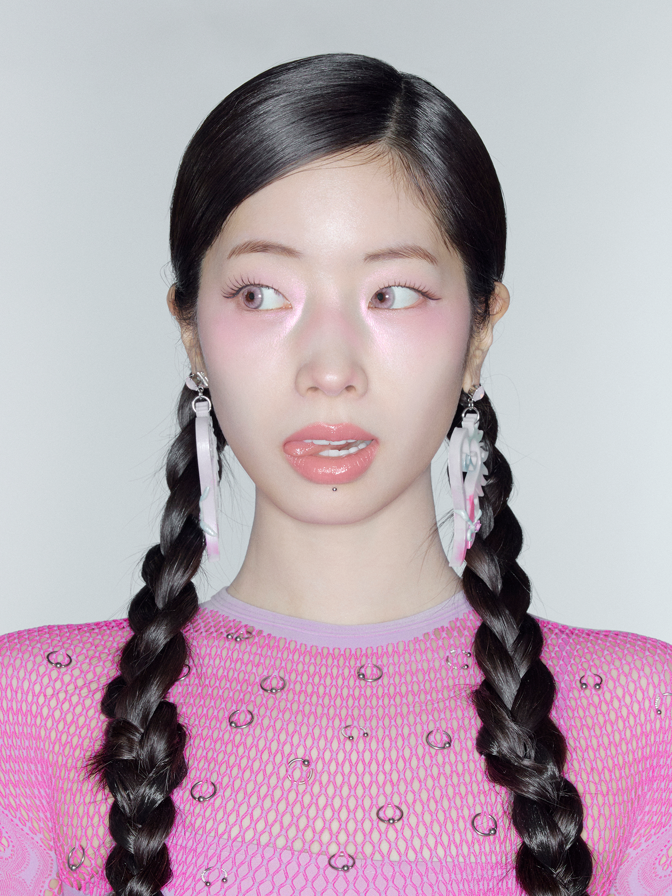
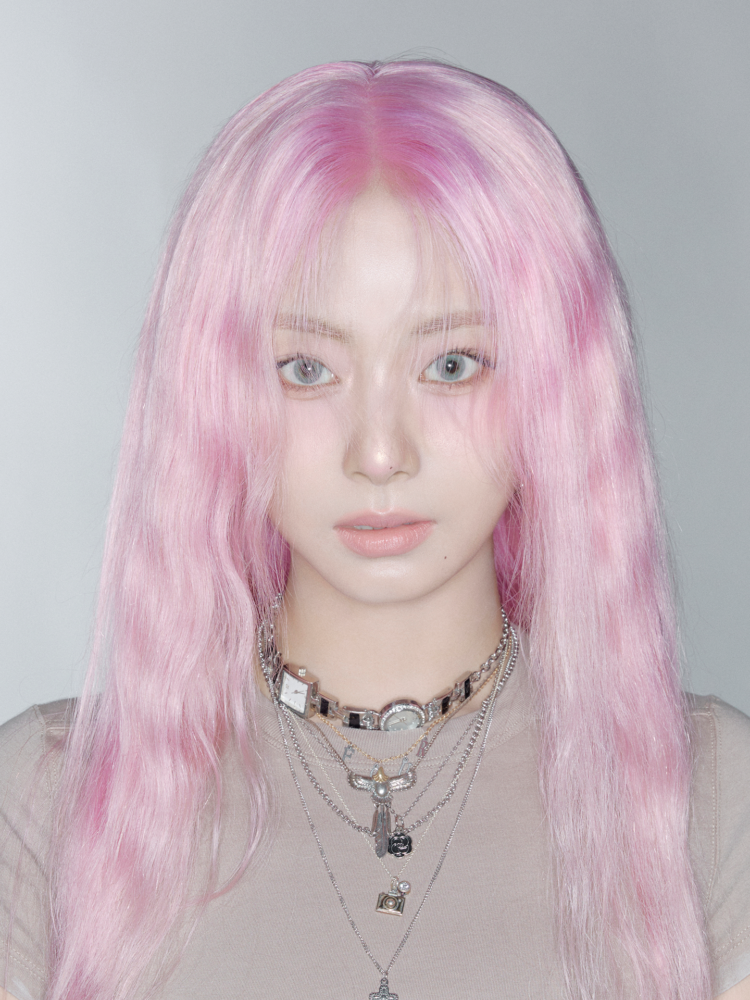

Im Nayeon (임나연)
Vocalista Principal, Centro, Visual
Fecha de nacimiento: 22 de septiembre de 1995
Lugar de nacimiento: Seúl, Corea del Sur
Posición: Oldest (La mayor del grupo)
Nayeon es la miembro más antigua de TWICE y es conocida por su carisma en el escenario y sus poderosas habilidades vocales. Su personalidad brillante y su sonrisa contagiosa la han convertido en una de las favoritas de los fans. En 2022, debutó como solista con el mini álbum "IM NAYEON".

Yoo Jeongyeon (유정연)
Vocalista Principal
Fecha de nacimiento: 1 de noviembre de 1996
Lugar de nacimiento: Suwon, Corea del Sur
Altura: 167 cm
Jeongyeon es conocida por su voz distintiva y su personalidad tranquila y madura. Tiene una hermana mayor que también es cantante. Es considerada una de las miembros más atléticas del grupo y tiene un estilo único y andrógino que la distingue.

Hirai Momo (平井 もも)
Bailarina Principal, Sub-Rapera
Fecha de nacimiento: 9 de noviembre de 1996
Lugar de nacimiento: Kioto, Japón
Nacionalidad: Japonesa
Momo es ampliamente reconocida como una de las mejores bailarinas en el K-pop. Comenzó a entrenar en danza desde muy joven y ha ganado múltiples competencias de baile. Su estilo de baile poderoso y preciso la ha convertido en una bailarina respetada en la industria.

Minatozaki Sana (湊崎 紗夏)
Sub-Vocalista
Fecha de nacimiento: 29 de diciembre de 1996
Lugar de nacimiento: Osaka, Japón
Nacionalidad: Japonesa
Sana es conocida por su adorable personalidad y su famoso "Sha Sha Sha". Es muy popular en Japón y Corea, y es considerada una de las miembros más lindas del grupo. Su aegyo (ternura) natural y su carisma en el escenario la han convertido en una favorita de los fans.

Park Jihyo (박지효)
LEADER
Fecha de nacimiento: 1 de febrero de 1997
Lugar de nacimiento: Guri, Corea del Sur
Años de entrenamiento: 10 años (la más larga en JYP)
Jihyo es la líder y vocalista principal de TWICE. Entrenó durante 10 años en JYP Entertainment, lo que la convierte en la miembro con más tiempo de entrenamiento. Es conocida por sus poderosas habilidades vocales y su fuerte presencia en el escenario. Como líder, es respetada por su madurez y dedicación al grupo.

Myoui Mina (名井 南)
Bailarina Principal, Sub-Vocalista
Fecha de nacimiento: 24 de marzo de 1997
Lugar de nacimiento: San Antonio, Texas, USA (criada en Japón)
Nacionalidad: Japonesa-Americana
Mina es conocida como la "princesa cisne negro" debido a su elegante estilo de baile influenciado por su formación en ballet. Estudió ballet durante 11 años antes de unirse a JYP. Es conocida por su personalidad tranquila y reservada, pero brilla intensamente en el escenario.

Kim Dahyun (김다현)
Rapera Principal, Sub-Vocalista
Fecha de nacimiento: 28 de mayo de 1998
Lugar de nacimiento: Seongnam, Corea del Sur
Apodo: Tofu (por su piel pálida)
Dahyun se hizo famosa antes de debutar por su "Eagle Dance" que se volvió viral. Es conocida por su personalidad divertida y extrovertida, así como por sus habilidades de rap. A menudo actúa como la miembro cómica del grupo, entreteniendo a los fans y a sus compañeras con su humor.

Son Chaeyoung (손채영)
Rapera Principal, Sub-Vocalista
Fecha de nacimiento: 23 de abril de 1999
Lugar de nacimiento: Seúl, Corea del Sur
Altura: 159 cm (la más baja del grupo)
Chaeyoung es una artista talentosa que no solo rapea, sino que también dibuja y diseña. Ha creado varios diseños para TWICE y es conocida por su estilo único y sus tatuajes. A pesar de ser la más baja del grupo, tiene una presencia escénica poderosa y un talento excepcional para escribir letras.

Chou Tzuyu (周子瑜)
Vocalista de Apoyo, Visual, Maknae
Fecha de nacimiento: 14 de junio de 1999
Lugar de nacimiento: Tainan, Taiwán
Posición: Maknae (La más joven del grupo)
Tzuyu es la maknae (miembro más joven) y visual de TWICE. A pesar de ser la más joven, es la más alta del grupo con 172 cm. Es conocida por su belleza natural y ha sido clasificada múltiples veces como una de las caras más hermosas del mundo. Su personalidad tranquila y elegante contrasta con su poderosa presencia en el escenario.